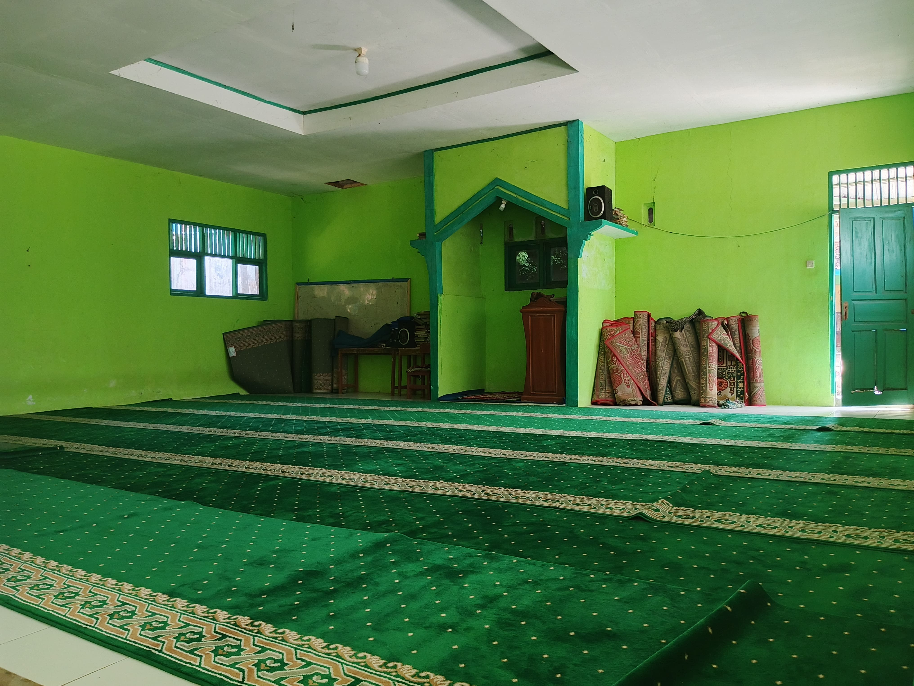
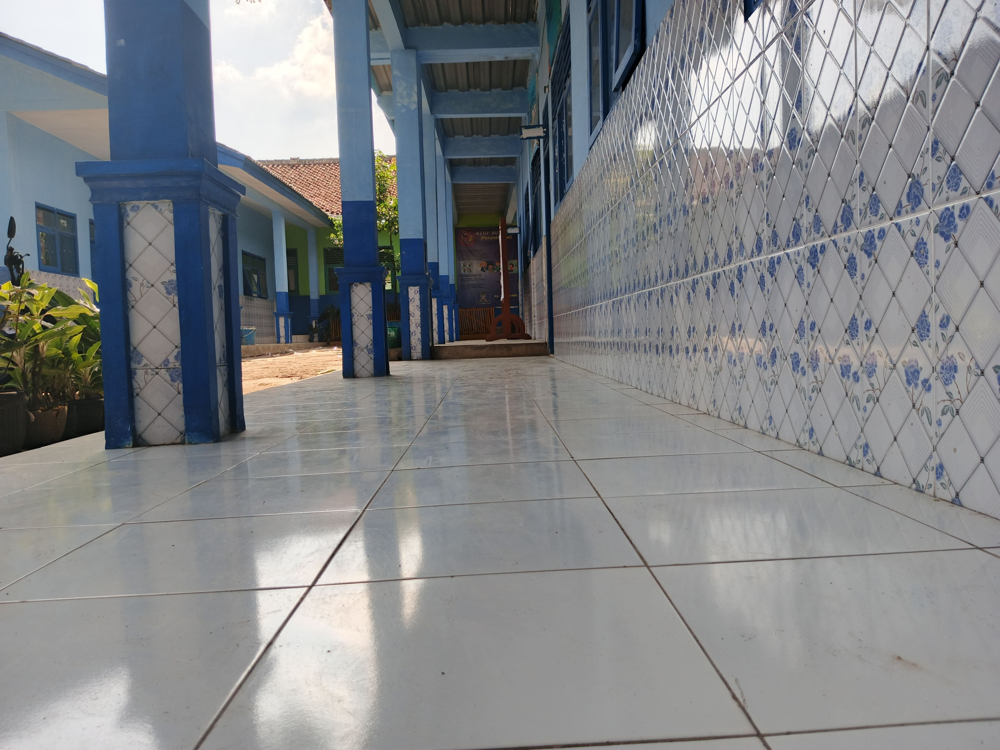
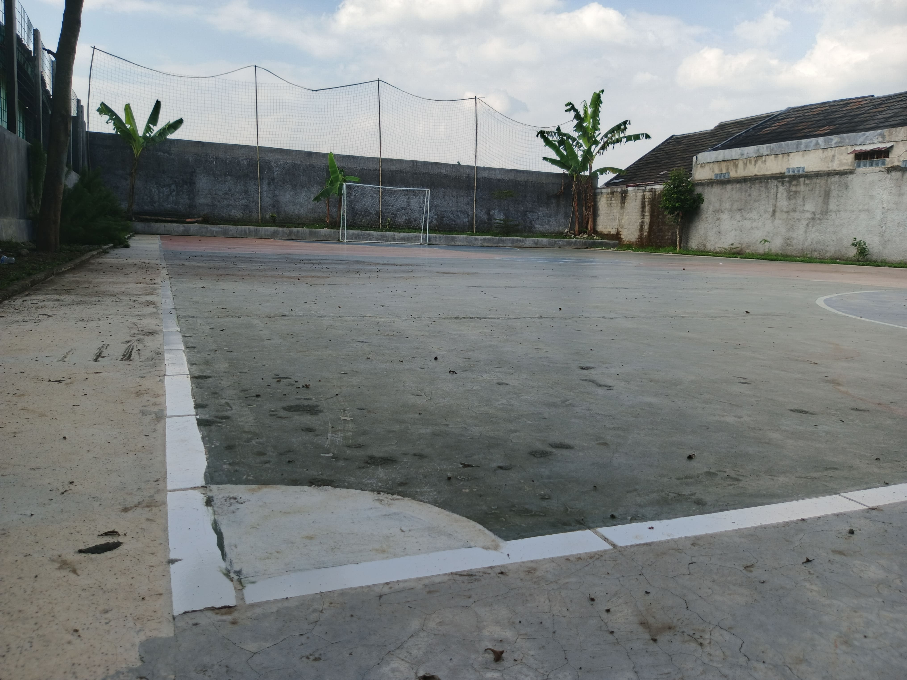
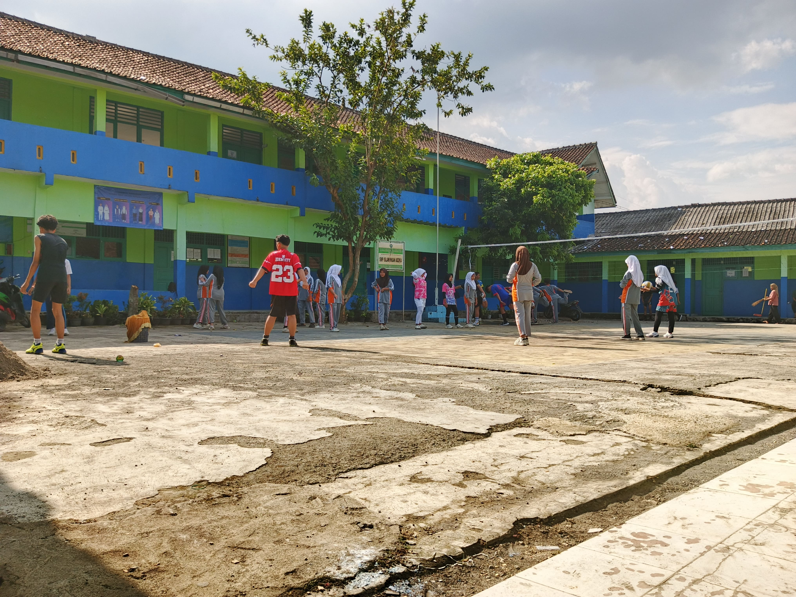

empat untuk shalat berjamaah selalu ramai saat istirahat ke-2 selalu shalat berjamaah dzuhur

lorong depan ruang guru, kelas 11 dan kelas 12, ada mading yang selalu di isi dengan tema yang unik

lapangan futsal selalu di pakai saar olahraga dan saat jam pelajaran dan saat ekskul futsal

lapangan yang ada di smp islam insan adzkia, selalu digunakan untuk kegiatan pembelajaran seperti olahraga, ekskul, upacara bendera dll...